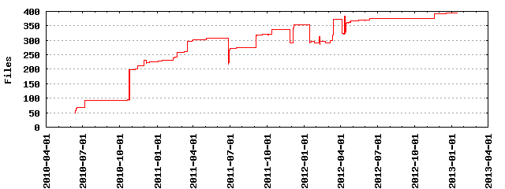

Files
- Total files
- 394
- Total lines
- 31855
- Average file size
- 33086.93 bytes

| Extension | Files (%) | Lines (%) | Lines/file |
|---|
| 22 (5.58%) | 673 (2.11%) | 30 |
| a | 12 (3.05%) | 0 (0.00%) | 0 |
| b | 7 (1.78%) | 2 (0.01%) | 0 |
| c | 1 (0.25%) | 1 (0.00%) | 1 |
| cfg | 2 (0.51%) | 90 (0.28%) | 45 |
| conf | 3 (0.76%) | 52 (0.16%) | 17 |
| css | 9 (2.28%) | 2659 (8.35%) | 295 |
| csv | 6 (1.52%) | 54 (0.17%) | 9 |
| doc | 1 (0.25%) | 80 (0.25%) | 80 |
| gif | 2 (0.51%) | 5 (0.02%) | 2 |
| html | 59 (14.97%) | 4548 (14.28%) | 77 |
| in | 1 (0.25%) | 3 (0.01%) | 3 |
| ini | 5 (1.27%) | 553 (1.74%) | 110 |
| ini_tmpl | 1 (0.25%) | 60 (0.19%) | 60 |
| install | 1 (0.25%) | 18 (0.06%) | 18 |
| jpg | 1 (0.25%) | 10992 (34.51%) | 10992 |
| js | 2 (0.51%) | 22 (0.07%) | 11 |
| json | 2 (0.51%) | 166 (0.52%) | 83 |
| pdf | 2 (0.51%) | 27497 (86.32%) | 13748 |
| pem | 2 (0.51%) | 24 (0.08%) | 12 |
| png | 52 (13.20%) | 1629 (5.11%) | 31 |
| ppt | 1 (0.25%) | 433 (1.36%) | 433 |
| py | 95 (24.11%) | 35137 (110.30%) | 369 |
| rdf | 18 (4.57%) | 211 (0.66%) | 11 |
| sh | 1 (0.25%) | 14 (0.04%) | 14 |
| txt | 53 (13.45%) | 3237 (10.16%) | 61 |
| wsgi | 4 (1.02%) | 167 (0.52%) | 41 |
| xml | 16 (4.06%) | 1929 (6.06%) | 120 |
| xsl | 4 (1.02%) | 602 (1.89%) | 150 |
| zip | 9 (2.28%) | 151 (0.47%) | 16 |